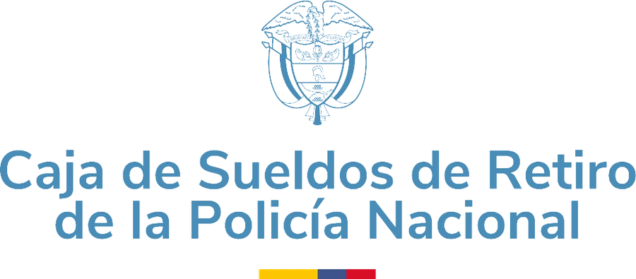

La asistente que llevó inteligencia artificial real a una entidad pública colombiana. Y no dejó a nadie por fuera.
Premio Impulsores de la Innovación Digital Otorgado a CASUR · Ministerio de Defensa NacionalHasta mayo de 2024, obtener un desprendible significaba desplazarse hasta CASUR y reclamarlo en papel. Una consultoría definió cómo atender de verdad a un adulto mayor y por cuál canal: WhatsApp, el más usado del país. Kata nació ahí, capaz de entenderlo. Se rompió la barrera y la política de cero papel dejó de ser una intención.
La base institucional de CASUR es de ~125.000 afiliados, pero solo 110.000 tienen número de celular válido —los mismos a los que la operación envía SMS cada mes—. Ese es el denominador correcto: los ~15.000 restantes no registran móvil y no se espera que usen un canal de WhatsApp.
Bajo el contrato CO24000181-GAC y la plataforma SAYFORM IA ADVANCED. No hubo una fase previa de chatbot que después se “actualizara”: nació como IA generativa nativa. En dos meses, 8.260 afiliados ya habían escrito, sin campaña previa.
Pioneros en IA públicaAfiliados que no podían acceder porque sus datos de contacto estaban desactualizados. La respuesta no fue relajar la validación, sino abrir un canal humano que corrigiera esos registros y los devolviera al flujo automatizado.
Kata gana memoria conversacional y capacidad de manejar varias solicitudes en una misma interacción. Se suma reconocimiento de voz, caracterización de usuarios y una plataforma donde un agente humano toma la conversación sin cambiar de canal.
El volumen documental se triplicaLa gestión y entrega de documentos se delega a servicios especializados. Y el sistema deja de esperar: cada mes salen correos a todos los afiliados y SMS avisando que el desprendible ya está disponible.
De reactivo a proactivo95.229 afiliados únicos y 296.025 documentos en la vigencia, a un ritmo mensual 3,6 veces superior al del primer año.
Kata solo entrega un documento si el número desde el que escriben, el nombre y la cédula coinciden exactamente con los registros de CASUR. Pero muchos afiliados —población adulta mayor— tenían teléfonos viejos o datos que nunca se actualizaron. El requisito que los protegía los dejaba afuera.
No se relajó la validación: se abrió un canal humano dedicado a corregir esos registros y devolver al afiliado al flujo automatizado. Lo automático resuelve el volumen; lo humano resuelve la excepción.
Una caída del 66 % en la intervención humana mientras la demanda documental se triplicaba. No es menos servicio: es más autogestión y menos excepciones.
El afiliado escribe —o habla— desde el celular que ya tiene y ya sabe usar. Kata entiende, valida su identidad y entrega el documento en segundos.
Las validaciones de identidad se ejecutan mediante funciones tipadas determinísticas, como middleware obligatorio. Si no retornan un estado autenticado, el sistema técnicamente no puede generar el documento.
Data Center propio y GPU dedicada: sin servicios comerciales públicos de IA, sin transferencia de datos a nubes públicas, sin entrenamiento cruzado con información institucional.
Cifrado extremo a extremo entre el Fortinet institucional y los nodos MikroTik de Cloud City. Las consultas a Oracle solo se autorizan desde segmentos autenticados dentro del túnel.
Flujo OTP criptográfico de un solo uso cuando WhatsApp opera bajo identificadores LID. Los documentos se generan bajo demanda, con URLs firmadas y destrucción automática tras la entrega.
Registros transaccionales, logs de autenticación y control de expiración documental, bajo los principios de Gobierno Digital y con soporte técnico 24/7.


Informe de trazabilidad · Julio 2026